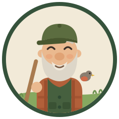

This is what a finding looks like
One or two plain lines on what I saw and why it matters. Every note either carries the command that fixes it, or says the call is yours.
the exact command goes here

I walk the grounds of this brain once a week and pin what I find here. I report and I point. I never repair, and I never send anything to anyone.
Ask for a steward sweep in chat, or set up the weekly walk task, and this board fills in.
One or two plain lines on what I saw and why it matters. Every note either carries the command that fixes it, or says the call is yours.
the exact command goes here
Anything only a person can decide lives in NEEDS-YOUR-EYES.md, in the brain folder. If that file says nothing is waiting, nothing is.